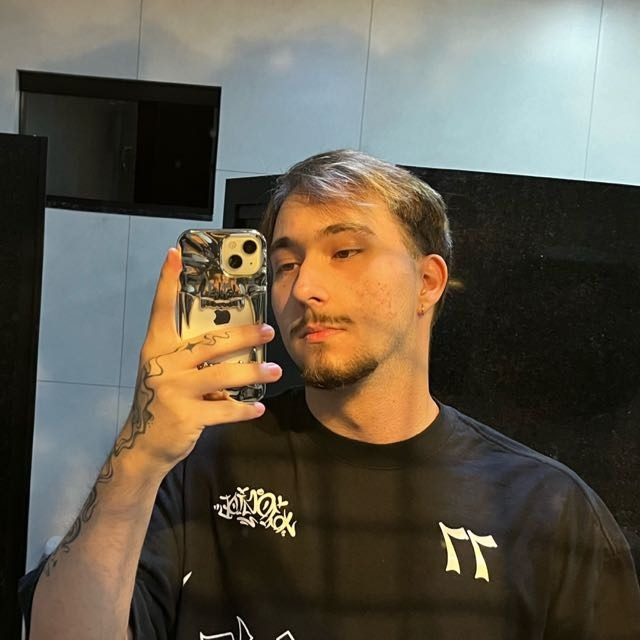

| Guilherme Thomazoni | Sobre Mim | Formação | Experiências | Habilidades | Links | Contato |
|
Olá!
Eu sou o Guilherme Thomazoni. Analista de Dados | Designer | Estudante de Software |
 |
Sobre Mim |
||
|
Nascido, criado e residindo em
Francisco Beltrão - Paraná,
completei 19 anos em 2026.
Desde cedo, sempre tive um grande apreço pelos games, pelas artes visuais e pela música (que, coincidentemente, são meus principais hobbies nos dias atuais), além de uma duradoura obsessão adolescente por k-pop (que persiste até hoje). |
Atualmente, trabalho como analista
de dados na Cresol. Mas, nem
sempre foi assim:
Comecei como repositor de atacado aos 16 anos, até entrar em um programa de estágio, onde atuei como suporte técnico e posteriormente fui efetivado. Antes da Cresol, também atuei como analista de implantação e desenvolvedor por um curto período. |
Gosto de dizer que a música é o
meu primeiro e último amor. Por
isso, gosto de passar a maior
parte do meu tempo livre
praticando guitarra. E, no meu
tempo ocupado, tô sempre
ouvindo música. Não consigo
ficar sem por muito tempo.
"Então, por que tá cursando Software se gosta tanto de arte?" Porque preciso de dinheiro. |
|
Experiências, projetos e interesses |
||
|
Experiências
No 3º ano do Ensino Médio, participei dos eventos:
|
Projetos
|
Interesses
Sou profundamente apaixonado pela arte e pelas áreas humanas do conhecimento, como história, geografia, sociologia, psicologia e outros. Dentro da arte, sou um grande entusiasta de desenho, pintura, música, design gráfico e outros, além de um anacronismo na fotografia, grafite, audiovisual e motion design. |
|
LinksLinkedIn | Instagram | GitHub | Tracker Contatoguilhermekupkowski@alunos.utfpr.edu.br (46) 99981-7442 |